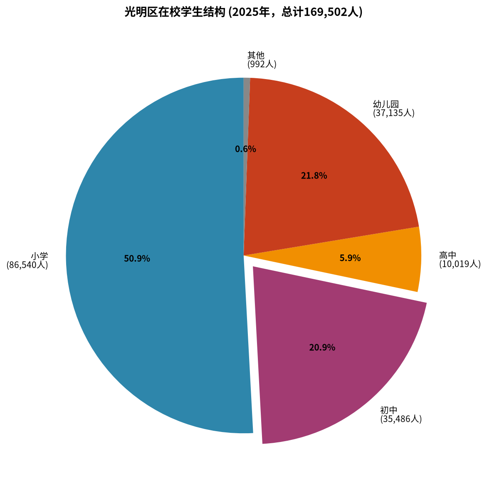
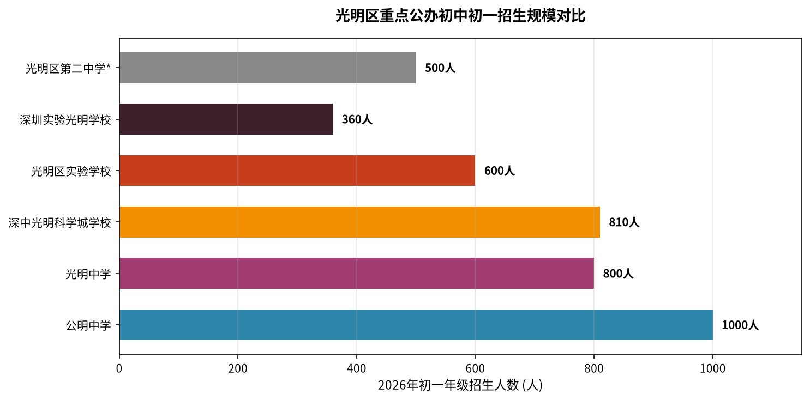
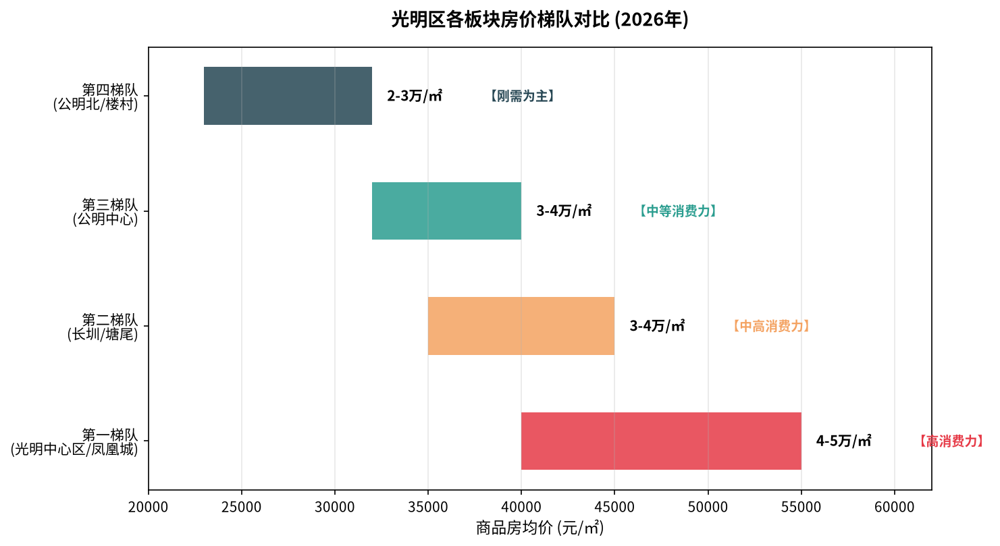
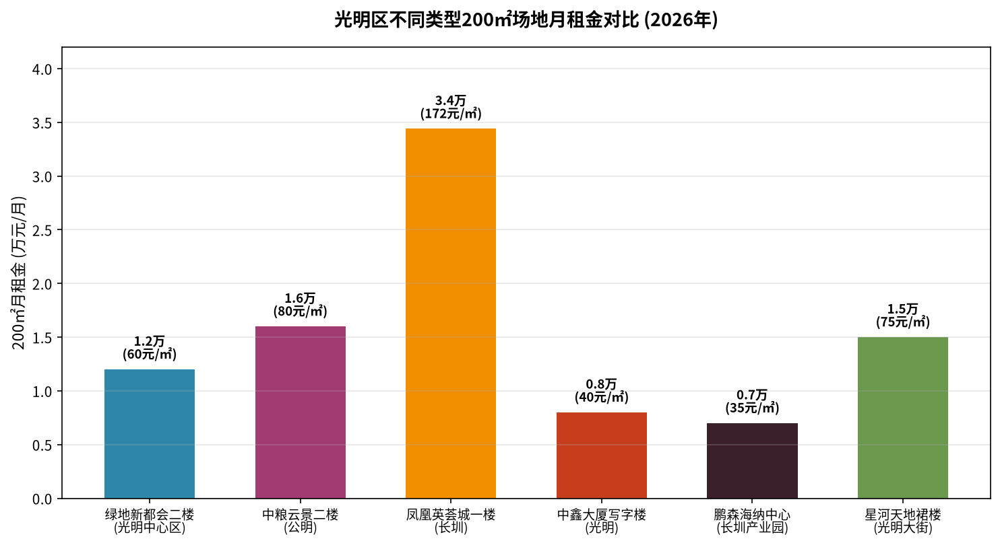
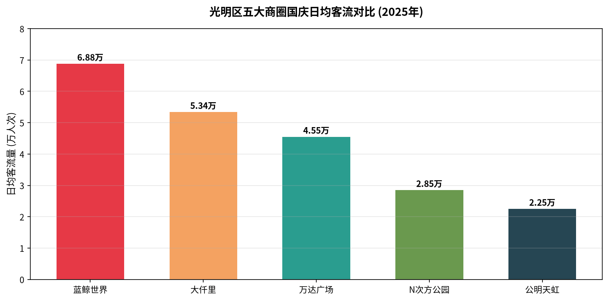

光明区2025年GDP达1841.76亿元（同比+6.5%），人均GDP 15.5万元，常住人口119.74万人（年增2.32万）。人均可支配收入75,093元（+5.4%），社会消费品零售总额330.53亿元（+6.0%）。光明区统计局 2026-07
全区在校学生总计169,502人，其中初中生35,486人（占比20.9%），增速最快。高中生10,019人。初中阶段是AI自习室的核心目标客群。光明区统计局 2026-07

2026年秋季公办初中招生中，公明中学以20班/1000人居首，是光明区最大的初中。深中光明科学城学校（18班/810人）和光明中学（16班/800人）紧随其后。光明区教育局 2026-06

| 所属街道 | 学校名称 | 教育集团 | 学校类型 | 地址 | 初一年级 |
|---|---|---|---|---|---|
| 光明街道 | 光明中学 | 光明中学（集团） | 完全中学 | 碧园路2号 | 16班/800人 |
| 深圳实验光明学校 | 深圳实验光明（集团） | 九年一贯制 | 博闻路2号 | 8班/360人 | |
| 华夏中学 | 光明区实验学校（集团） | 初级中学 | 华夏路东周文化公园 | — | |
| 深圳实验光明科林学校 | 深圳实验光明（集团） | 九年一贯制 | 观光路科林路交汇 | — | |
| 深圳实验光明明湖学校 | 深圳实验光明（集团） | 九年一贯制 | 月亮路碧塘路交汇 | — | |
| 公明街道 | 公明中学 | 公明中学（集团） | 初级中学 | 振明路60号 | 20班/1000人 |
| 李松蓢学校 | — | 九年一贯制 | 李松蓢社区志康路 | — | |
| 下村小学（初中部？） | — | — | 下村社区 | — | |
| 公明中英文学校 | 民办 | 九年一贯制 | — | 6班/216人 | |
| 尔雅学校 | 民办 | 九年一贯制 | 上村长春北路 | — | |
| 马田街道 | 光明区高级中学 | 光明区高级中学（集团） | 完全中学 | 新庄社区新围路5号 | 全区招生 |
| 光明区第二中学 | 光明区高级中学（集团） | 初级中学 | 松白路4491号 | 约8班 | |
| 理创实验学校 | 光明区高级中学（集团） | 九年一贯制 | 马山头社区龟岗东路 | — | |
| 科育学校 | 光明区高级中学（集团） | 九年一贯制 | 薯田埔社区光育路 | — | |
| 深理工附属光明知行学校 | 深理工附属光明教育集团 | 九年一贯制 | 合水口社区文阁路 | 约4班 | |
| 凤凰街道 | 深圳中学光明科学城学校 | 深中光明科学城（集团） | 九年一贯制 | 甲子塘社区东长路 | 18班/810人 |
| 光明区实验学校 | 光明区实验学校（集团） | 九年一贯制 | 塘尾社区东升路 | 12班/600人 | |
| 凤凰城实验学校 | — | 九年一贯制 | 塘家社区科裕路 | 6班/300人 | |
| 光明区外国语学校 | 光明区外国语（集团） | 九年一贯制 | 凤凰社区丰成路 | 6班/300人 | |
| 玉塘街道 | 长育学校 | 光明区高级中学（集团） | 初级中学 | 玉塘社区光侨路 | — |
| 玉律学校 | — | 九年一贯制 | 玉律社区三区 | — | |
| 华中师大附属光明勤诚达学校 | 深中光明科学城（集团） | 九年一贯制 | 玉塘社区长松路 | — | |
| 新湖街道 | 深圳理工大学附属实验高级中学 | 深理工附属 | 高级中学 | 楼村社区华裕路 | 高中 |
| 光明书院 | 民办 | 十二年一贯制 | 红湖村168号 | 民办 |
| 学校 | 性质 | 位置 | 备注 |
|---|---|---|---|
| 光明中学 | 公办完全中学 | 光明街道 | 含初中 |
| 光明区高级中学 | 公办完全中学 | 马田街道 | 含初中，42班/2135人高中 |
| 深圳实验学校光明部 | 公办高中 | 光明街道 | 四大名校分校 |
| 深圳大学附属实验中学 | 公办高中 | 玉塘街道长松路 | — |
| 深圳理工大学附属实验高级中学 | 公办高中 | 新湖街道楼村 | 42班/2135人 |
| 深外致远/博雅/弘知/理工高中 | 公办高中 | 马田街道砺学路 | 4所，同一校区 |
光明区房价呈现明显的由东向西梯度下降格局。房价直接反映家庭支付能力，是判断教培消费力的核心指标。结合新房均价、二手房成交价、商业活跃度，可将光明区划分为四大消费梯队：网易房产 2026-07

| 梯队 | 板块 | 房价区间 | 代表小区 | 目标学校 | 家长画像 |
|---|---|---|---|---|---|
| 第一梯队 高消费力 |
光明中心区 （科学公园）凤凰城 |
4-5.5万/㎡ | 星河天地华邸(5.19万) 宏发万悦山(5.17万) 深房传麒山(6.6万) 光明大第(7.2万) |
光明中学 深圳实验光明学校 华夏中学 |
公务员/事业单位/企业中高管/科研人员，重视教育品质，付费能力强 |
| 第二梯队 中高消费力 |
长圳板块 塘尾板块 |
3.5-4.5万/㎡ | 勤诚达正大城(3.7万) 松茂御城(4.25万) 凤凰英荟城(保障房) |
深中光明科学城学校 长育学校 光明区实验学校 |
科技园年轻白领/刚需家庭，对名校IP敏感，性价比敏感度高 |
| 第三梯队 中等消费力 |
公明中心区 马田片区 |
3.2-4万/㎡ | 宏发雍景城(3.3-3.6万) 光明峰荟(3.37万) 中粮云景花园 宏发天汇城 |
公明中学 光明区第二中学 光明区高级中学 |
本地居民/个体商户/工薪阶层，重视升学结果，付费意愿稳定 |
| 第四梯队 刚需为主 |
公明北/楼村 玉律/田寮 |
2.3-3.2万/㎡ | 龙湖观萃(3.5万) 各城中村/自建房 |
李松蓢学校 玉律学校 |
产业工人/外来务工家庭，价格敏感度极高，付费能力有限 |
光明区教培场地租金差异较大。一楼临街商铺约5-8元/㎡/天（150-240元/㎡/月），二楼商铺约2-3元/㎡/天（60-100元/㎡/月），写字楼/产业园约30-50元/㎡/月。200㎡二楼场地的月租金区间约为1.2万-2万元。58安居客 2026-0858同城 2026-05

| 项目 | 位置 | 面积 | 月租金 | 单价 | 楼层/类型 | 更新时间 | 适合度 |
|---|---|---|---|---|---|---|---|
| 绿地新都会 | 光明大道与光明大街交汇 | 200㎡ | 1.2万 | 60元/㎡/月 (2元/天) |
二楼/社区底商 TOD综合体 |
2026-08-24 | ⭐⭐⭐⭐⭐ |
| 中粮云景花园 | 马田街道松白路金安路 | 240㎡ | 1.92万 | 80元/㎡/月 (2.67元/天) |
二楼转角/商业街 | 2026-05-22 | ⭐⭐⭐⭐⭐ |
| 星河天地四期裙楼 | 光明大街站200米 | 50-160㎡ 可组合 |
面议 | 47-88元/㎡/月 | 裙楼商铺/沿街 | 2026-09-04 | ⭐⭐⭐⭐ |
| 鹏森海纳中心 | 东长路与光侨路交汇 | 1700㎡整层 可分割 |
面议 | 约30-40元/㎡/月 | 4-6楼/产业园 | 2026-08-31 | ⭐⭐⭐ |
| 勤诚达临街培训机构 | 长圳/勤诚达 | 200㎡ | 约1.6万 | 2.67元/㎡/天 | 临街/现成装修 | — | ⭐⭐⭐⭐ |
| 中鑫大厦写字楼 | 光明绘猫路 | 200㎡ | 0.8万 | 40元/㎡/月 | 写字楼/精装修 | 2026-09-05 | ⭐⭐⭐ |
| 凤凰英荟城商铺 | 长圳/凤凰英荟城 | 192㎡ | 3.3万 | 172元/㎡/月 (5.73元/天) |
一楼/社区底商 | 2026-06-18 | ⭐⭐ |
| 场地类型 | 单价范围 | 200㎡月租金 | 优势 | 劣势 |
|---|---|---|---|---|
| 一楼临街商铺 | 150-240元/㎡/月 | 3-4.8万 | 自然流量大、品牌展示好 | 租金高、非教培首选 |
| 二楼社区商业 | 60-100元/㎡/月 | 1.2-2万 | 性价比高、安静适合学习、教培聚集 | 需引流、昭示性一般 |
| 写字楼/产业园 | 30-50元/㎡/月 | 0.6-1万 | 租金最低、环境好 | 获客难、商业氛围弱 |
| 教育城/综合体 | 50-80元/㎡/月 | 1-1.6万 | 教培聚集、共享客流 | 选择少、竞争也大 |
商圈客流与消费活跃度直接反映片区商业成熟度和家长消费意愿。2025年国庆数据显示，蓝鲸世界以日均6.88万人次居首（光明中心区/凤凰城），大仟里日均5.34万（公明马田）紧随其后。深圳光明网 2025-10

| 片区 | 教培聚集点 | 代表机构 | 聚集程度 |
|---|---|---|---|
| 公明/马田 | 宏发嘉域、益田假日府邸、大东明城市广场 | 宏博教育(2130㎡/1000+生源)、万邦一百、景程教育 | ⭐⭐⭐⭐⭐最成熟 |
| 光明中心区 | 星河天地商业街、绿地新都会 | 新入驻为主 | ⭐⭐⭐新兴 |
| 长圳/凤凰城 | 勤诚达K+广场、N次方公园 | 各类艺术培训 | ⭐⭐⭐快速增长 |
| 玉律/田寮 | 社区底商为主 | 启明星托管等小型机构 | ⭐⭐分散 |
综合学校规模、消费力、租金、交通、竞争态势五大维度，筛选出以下3个优先考察地点：
| 对比维度 | A. 中粮云景(公明) | B. 绿地新都会(光明中心区) | C. 长圳凤凰城 |
|---|---|---|---|
| 综合评分 | 9.2 | 8.8 | 8.5 |
| 学生基数 | ⭐⭐⭐⭐⭐ 最大 | ⭐⭐⭐⭐ 较大 | ⭐⭐⭐⭐ 大 |
| 家长消费力 | ⭐⭐⭐⭐ 中等偏上 | ⭐⭐⭐⭐⭐ 最强 | ⭐⭐⭐ 分化大 |
| 租金性价比 | ⭐⭐⭐⭐ 较高 | ⭐⭐⭐⭐⭐ 最佳 | ⭐⭐⭐⭐ 灵活 |
| 交通便利性 | ⭐⭐⭐⭐ 双地铁 | ⭐⭐⭐⭐⭐ TOD无缝 | ⭐⭐⭐ 单地铁 |
| 竞争环境 | ⭐⭐⭐ 较激烈 | ⭐⭐⭐⭐ 竞争少 | ⭐⭐⭐⭐ 竞争少 |
| 增长潜力 | ⭐⭐⭐ 稳定 | ⭐⭐⭐⭐ 较大 | ⭐⭐⭐⭐⭐ 最大 |
| 推荐定位 | 首选稳盘 | 品质路线 | 增长路线 |
路线逻辑：从东向西，沿地铁6号线行进，减少折返。上午考察光明中心区（消费力最强），中午在公明用餐并考察首选方案，下午考察长圳增长极。三个点均在6号线沿线，地铁直达，自驾也方便。
| 项目 | 金额（万元） | 备注 |
|---|---|---|
| 场地押金（2-3个月） | 2.4-6.0 | 按1.2-2万/月计算 |
| 装修工程 | 20-30 | 隔断、地面、墙面、吊顶、灯光，约1000-1500元/㎡ |
| 桌椅家具 | 5-8 | 50套学习桌椅+休息区家具 |
| AI设备与系统 | 8-15 | 电脑/平板、AI学习系统、监控 |
| 空调新风系统 | 4-6 | 中央空调或分体空调+新风 |
| 消防改造 | 2-4 | 根据场地情况 |
| 前期市场推广 | 3-5 | 地推、线上投放、开业活动 |
| 备用金（3个月运营） | 10-15 | 租金+人员+水电 |
| 合计 | 54.4-89.0万 | 建议预算60-80万 |
| 项目 | 金额（元/月） | 备注 |
|---|---|---|
| 场地租金 | 12,000-20,000 | 二楼200㎡ |
| 物业费+水电费 | 2,000-3,000 | 含空调费 |
| 人员工资（3-4人） | 25,000-35,000 | 店长1名+学习管理师2-3名 |
| AI系统/设备维护 | 3,000-5,000 | 系统授权+耗材 |
| 市场推广 | 5,000-10,000 | 含地推、线上 |
| 其他杂费 | 2,000-3,000 | 办公用品、维修等 |
| 月成本合计 | 49,000-76,000 | 约5-7.6万/月 |
| 指标 | 保守估计 | 中性估计 | 乐观估计 |
|---|---|---|---|
| 客单价（元/月） | 2,000 | 2,500 | 3,000 |
| 满座率 | 50%（25人） | 70%（35人） | 85%（43人） |
| 月营收（万元） | 5.0 | 8.75 | 12.9 |
| 月利润（万元） | 0-2.6 | 1.15-3.85 | 5.3-8.0 |
| 回本周期 | 24-36个月 | 15-20个月 | 8-12个月 |
| 风险类型 | 具体风险 | 应对建议 |
|---|---|---|
| 政策风险 | 教培行业监管政策变化 | 定位为"AI自习室/学习服务"而非学科培训，合规运营 |
| 竞争风险 | 现有托管/培训机构转型进入 | 强化AI+拔尖教育差异化，建立技术壁垒 |
| 选址风险 | 所选位置学生流量不达预期 | 实地蹲点测算上下学人流，签短约+续约权 |
| 入住率风险 | 新片区入住率提升慢 | 优先选择成熟片区（公明），新片区控制投入 |
| 租金风险 | 合同到期后大幅涨租 | 争取3-5年租期+约定递增幅度（如每年3-5%） |
建议明日考察后，根据现场实际情况，在3个方案中选择1-2个进入深度谈判阶段，争取最佳租赁条件。谈判重点：免租期（至少2个月装修期）、租金递增（每年不超过5%）、分租灵活性（初期可先租小面积再扩）。
本报告数据来源包括：光明区统计局公报、光明区教育局招生指引、58安居客/58同城真实挂牌、安居客/乐有家/Q房网房价数据、深圳光明网商圈数据等。所有关键数据均标注来源与日期。